Here are the main simulations for IPKWZ_VF_VECSV:
1. benchmark: benchmark not very accurate but useful for comparing against latnerative algorithms 2. precise 3. operational
Contents
Benchmark Simulation, used in Main Testing Files
benchmark not very accurate but useful for comparing against latnerative algorithms
it_param_set = 4; [param_map, support_map] = ffs_ipwkz_set_default_param(it_param_set); % Simulation Accuracy param_map('it_w_perc_n') = 50; param_map('it_ak_perc_n') = param_map('it_w_perc_n'); param_map('it_z_n') = 15; param_map('fl_coh_interp_grid_gap') = 0.1; param_map('fl_w_interp_grid_gap') = 0.1; param_map('it_c_interp_grid_gap') = 10^-4; % Display Parameters support_map('bl_display') = false; support_map('bl_display_final') = false; support_map('bl_time') = true; support_map('bl_profile') = false; % Call Program ff_ipwkz_vf_vecsv(param_map, support_map);
Elapsed time is 1.298934 seconds. Warning: Directory already exists.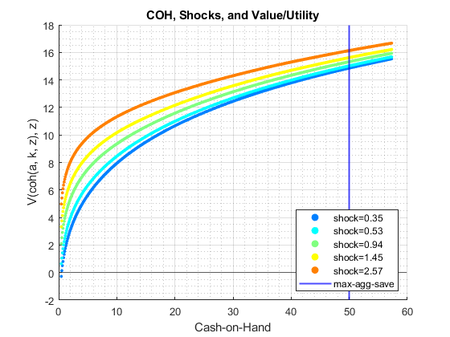 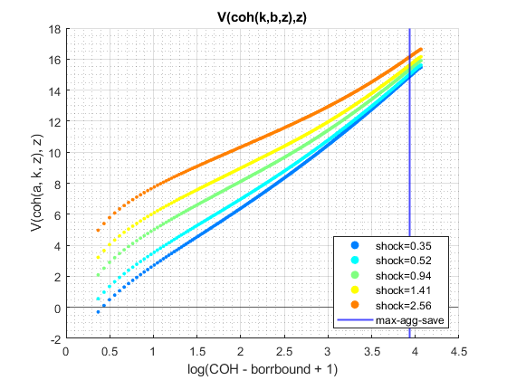 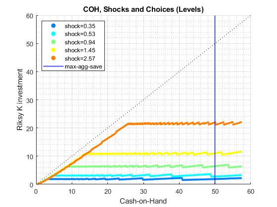 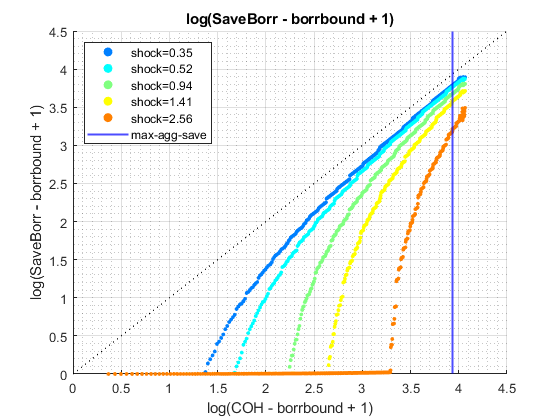 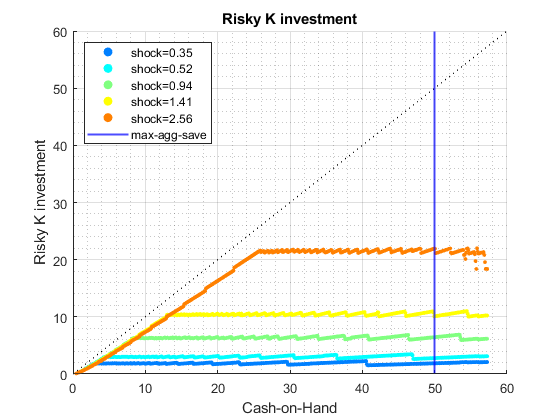 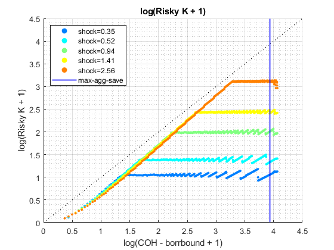 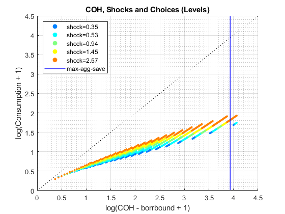 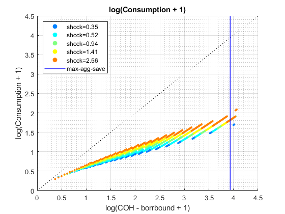 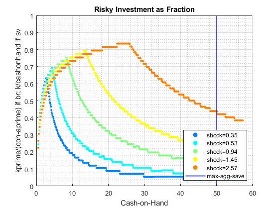 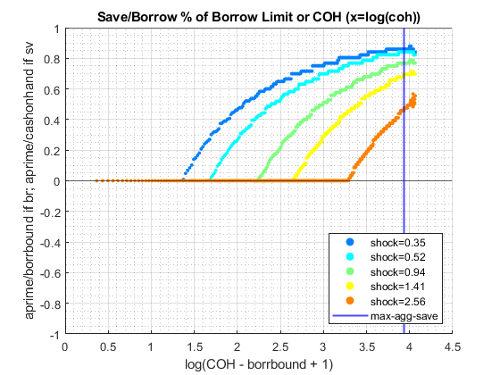 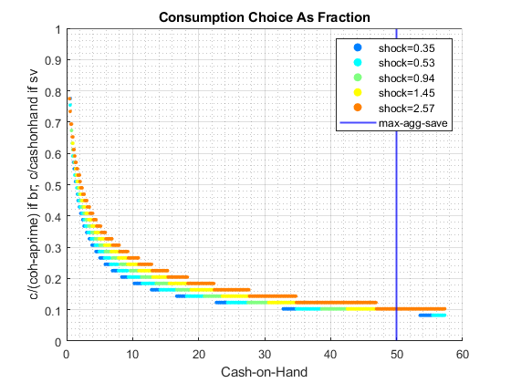
Operational Simulation
fast and accurate enough as main simulation parameters see fsi_ikwz_vf_vecsv_coh_interp_grid_gap.m, fsi_ikwz_vf_vecsv_w_n.m, fsi_ikwz_vf_vecsv_z_n.m
it_param_set = 4; [param_map, support_map] = ffs_ipwkz_set_default_param(it_param_set); % Simulation Accuracy param_map('it_w_perc_n') = 250; param_map('it_ak_perc_n') = param_map('it_w_perc_n'); param_map('it_z_n') = 11; param_map('fl_coh_interp_grid_gap') = 0.05; param_map('fl_w_interp_grid_gap') = 0.05; param_map('it_c_interp_grid_gap') = 10^-4; % Display Parameters support_map('bl_display') = false; support_map('bl_display_final') = false; support_map('bl_time') = true; support_map('bl_profile') = false; % Call Program ff_ipwkz_vf_vecsv(param_map, support_map);
Elapsed time is 8.128381 seconds. Warning: Directory already exists.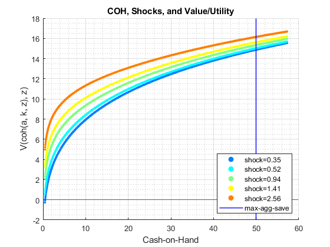 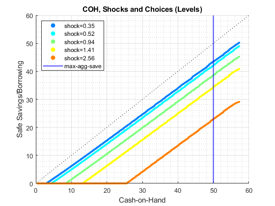 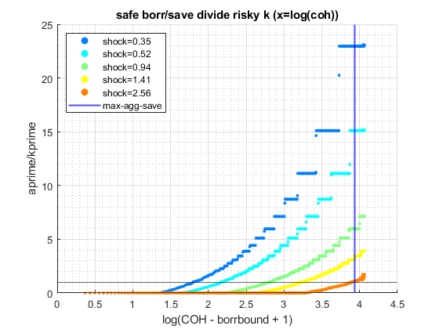 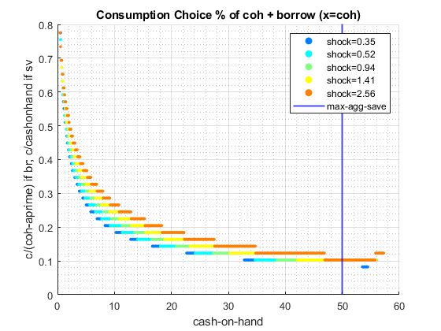 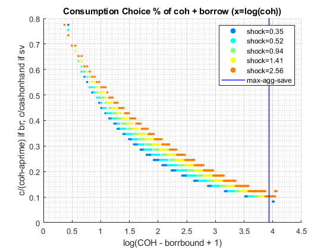 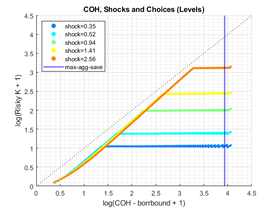 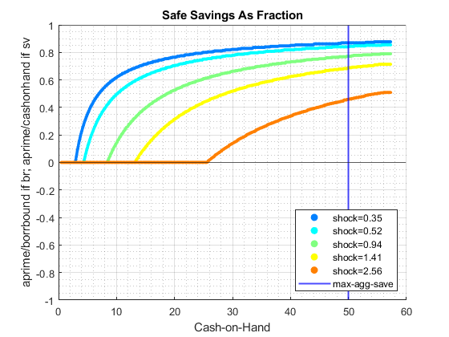 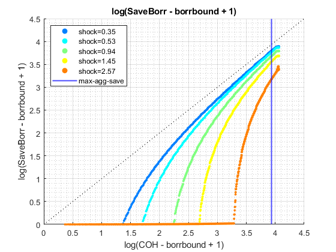 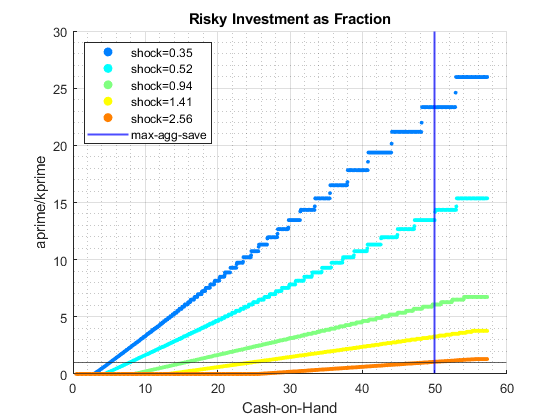
High Precision Simulation
see fsi_ikwz_vf_vecsv_coh_interp_grid_gap.m, fsi_ikwz_vf_vecsv_w_n.m, fsi_ikwz_vf_vecsv_z_n.m
it_param_set = 4; [param_map, support_map] = ffs_ipwkz_set_default_param(it_param_set); % Simulation Accuracy param_map('it_w_perc_n') = 500; param_map('it_ak_perc_n') = param_map('it_w_perc_n'); param_map('it_z_n') = 15; param_map('fl_coh_interp_grid_gap') = 0.025; param_map('fl_w_interp_grid_gap') = 0.025; param_map('it_c_interp_grid_gap') = 10^-4; % Display Parameters support_map('bl_display') = false; support_map('bl_display_final') = false; support_map('bl_time') = true; support_map('bl_profile') = false; % Call Program ff_ipwkz_vf_vecsv(param_map, support_map);
Elapsed time is 41.650815 seconds. Warning: Directory already exists.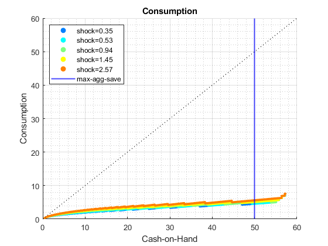
 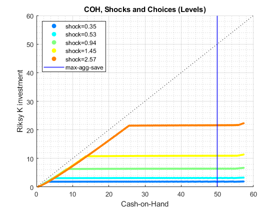 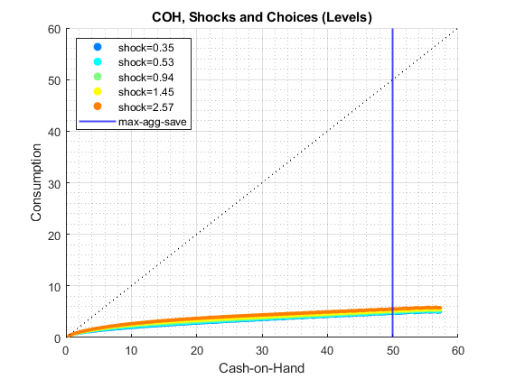 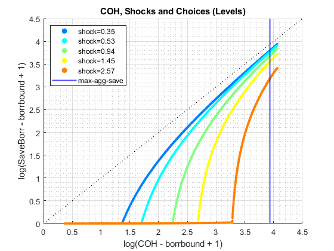 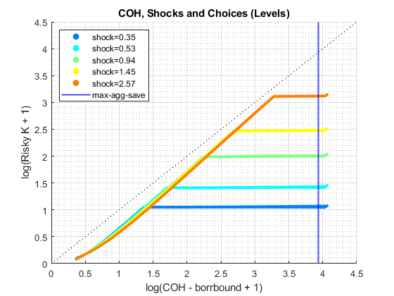 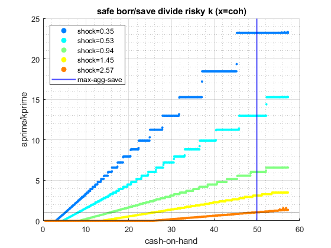 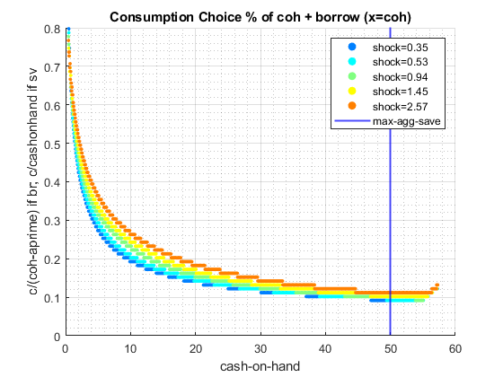 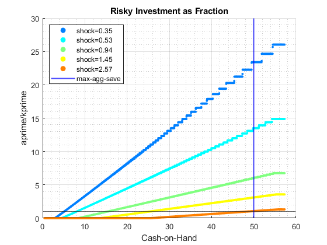 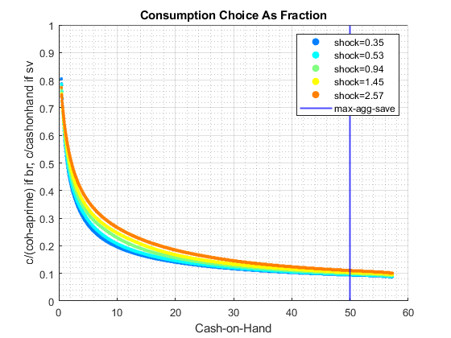
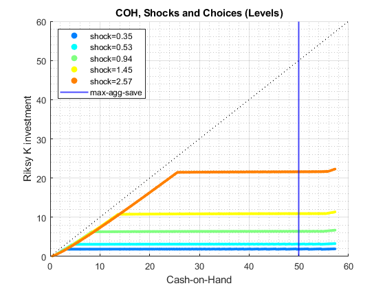 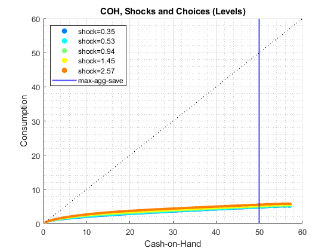 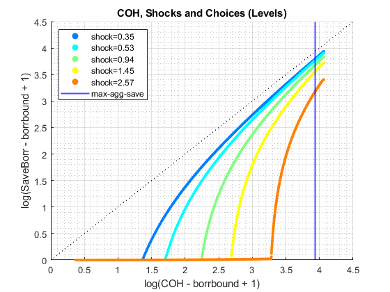 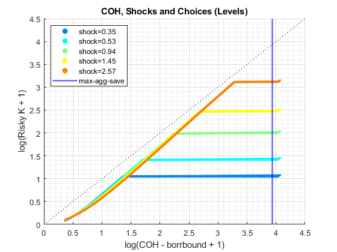 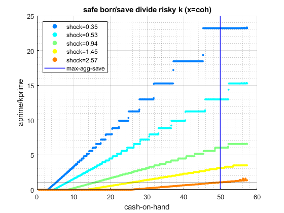 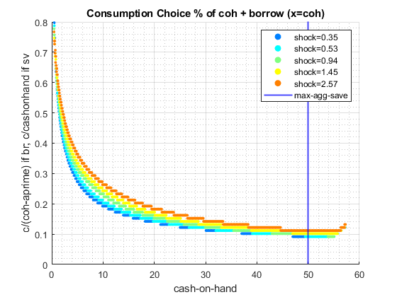 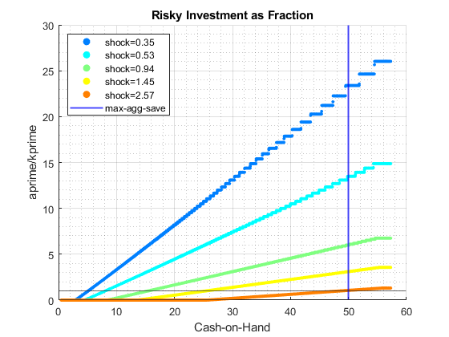 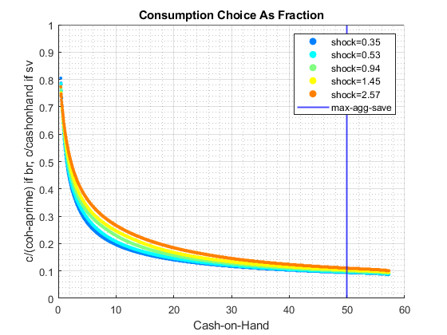